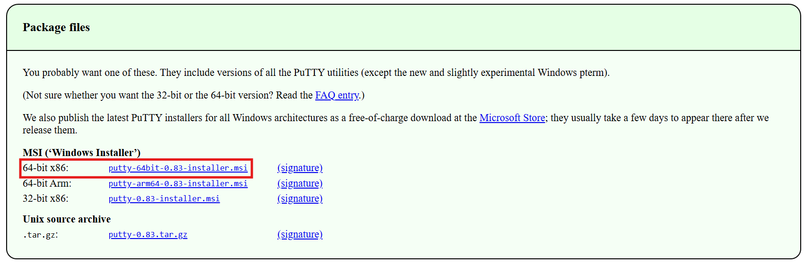
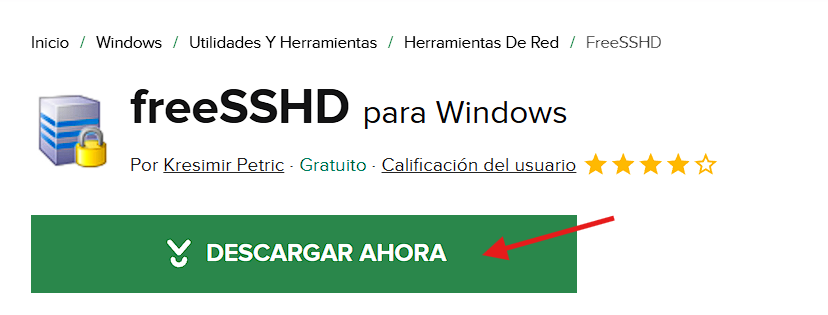

En esta parte te llevara a una pagina donde podras descargar la aplicacion de la terminar de ssh, antes de entrar a la aplicacion, tienes que configurar tu ip y tu dns aplicacion de terminal de ssh. escoger la opcion como la imagen...
en este apartado descargaras el sevidor, donde crearas el usuario y el servidor manualmente. Todo lo que necesitas el la ip de la computadora y el dns (esto para poder poner en predefinido la ip) Esto hara que cuando te desconectes del internet, el servidor siga funcionando. descargar ssh (servidor y cliente de ssh). es importante recordar tu contraseña
